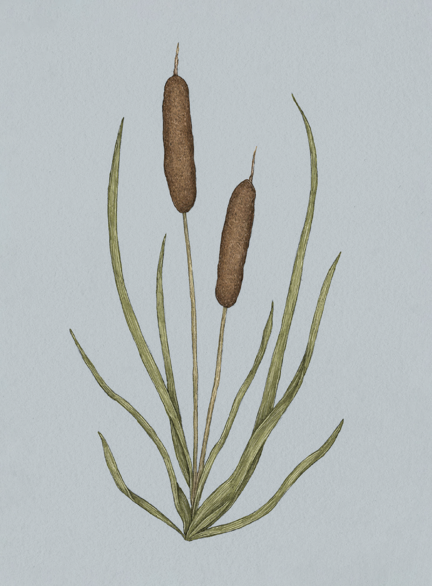

The Language of Flowers
Cattail

Cattail
Typha latifolia
Meaning
Peace and prosperity
Origin
The cattail's association with peace and prosperity is largely unexplained, but it may derive from the
plant's many domestic uses. Traditionally, the plant is used to weave baskets, to insulate clothing or
bedding, as fuel for a hearth fire, and as food.
Pair With
- Wheat for a promotion at work
- Laurel for success in a new venture